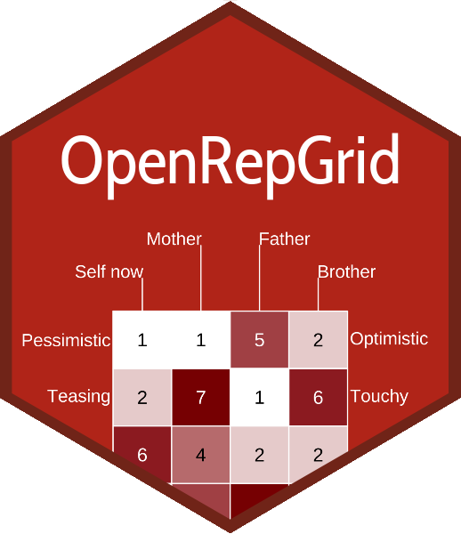

Descriptive stats for constructs and elements
Source:vignettes/web/descriptives.Rmd
descriptives.RmdSometimes basic descriptive measures for constructs and elements,
e.g. mean, standard deviation, are neeeded. To prompt descriptive
statistics for the constructs and elements of a grid use the function
statsConstructs and statsElements. The
following measures are returned:
- item name
- item number
- number of valid cases
- mean
- standard deviation
- trimmed mean (with trim defaulting to
.1) - median (standard or interpolated)
- mad: median absolute deviation (from the median)
- minimum
- maximum
- skew
- kurtosis
- standard error
R-Code
The following examples are identical for statsElements.
Just replace statsConstructs by statsElements
in order to analyze elements.
d <- statsConstructs(fbb2003)
d
#
# ####################################
# Desriptive statistics for constructs
# ####################################
#
# vars n mean sd median trimmed mad min max range skew kurtosis se
# (1) clever - not bright 1 8 3.75 2.31 4.0 3.75 2.97 1 7 6 0.02 -1.84 0.82
# (2) disorganiz - organized 2 8 4.00 1.77 4.5 4.00 2.22 2 6 4 -0.13 -1.96 0.63
# (3) listens - doesn't he 3 8 3.50 2.14 3.0 3.50 2.22 1 7 6 0.35 -1.40 0.76
# (4) no clear v - clear view 4 8 4.38 1.60 4.0 4.38 1.48 3 7 4 0.38 -1.68 0.56
# (5) understand - no underst 5 8 3.50 1.85 2.5 3.50 0.74 2 6 4 0.41 -1.90 0.65
# (6) ambitious - no ambitio 6 8 4.50 1.51 4.5 4.50 2.22 3 7 4 0.33 -1.58 0.53
# (7) respected - not respec 7 8 3.25 1.75 3.0 3.25 1.48 1 6 5 0.23 -1.67 0.62
# (8) distant - warm 8 8 4.12 1.96 4.0 4.12 1.48 1 7 6 -0.05 -1.46 0.69
# (9) rather agg - not aggres 9 8 3.62 1.92 3.0 3.62 2.22 1 7 6 0.36 -1.25 0.68The returned object is a dataframe, so you may access them as usual. E.g. to retrieve the means of the constructs, type
d$mean
# [1] 3.750 4.000 3.500 4.375 3.500 4.500 3.250 4.125 3.625
statsConstructs(fbb2003, trim = 10)
#
# ####################################
# Desriptive statistics for constructs
# ####################################
#
# vars n mean sd median trimmed mad min max range skew kurtosis se
# (1) cleve - not b 1 8 3.75 2.31 4.0 3.75 2.97 1 7 6 0.02 -1.84 0.82
# (2) disor - organ 2 8 4.00 1.77 4.5 4.00 2.22 2 6 4 -0.13 -1.96 0.63
# (3) liste - doesn 3 8 3.50 2.14 3.0 3.50 2.22 1 7 6 0.35 -1.40 0.76
# (4) no cl - clear 4 8 4.38 1.60 4.0 4.38 1.48 3 7 4 0.38 -1.68 0.56
# (5) under - no un 5 8 3.50 1.85 2.5 3.50 0.74 2 6 4 0.41 -1.90 0.65
# (6) ambit - no am 6 8 4.50 1.51 4.5 4.50 2.22 3 7 4 0.33 -1.58 0.53
# (7) respe - not r 7 8 3.25 1.75 3.0 3.25 1.48 1 6 5 0.23 -1.67 0.62
# (8) dista - warm 8 8 4.12 1.96 4.0 4.12 1.48 1 7 6 -0.05 -1.46 0.69
# (9) rathe - not a 9 8 3.62 1.92 3.0 3.62 2.22 1 7 6 0.36 -1.25 0.68
statsConstructs(fbb2003, index = F)
#
# ####################################
# Desriptive statistics for constructs
# ####################################
#
# vars n mean sd median trimmed mad min max range skew kurtosis se
# clever - not bright 1 8 3.75 2.31 4.0 3.75 2.97 1 7 6 0.02 -1.84 0.82
# disorganiz - organized 2 8 4.00 1.77 4.5 4.00 2.22 2 6 4 -0.13 -1.96 0.63
# listens - doesn't he 3 8 3.50 2.14 3.0 3.50 2.22 1 7 6 0.35 -1.40 0.76
# no clear v - clear view 4 8 4.38 1.60 4.0 4.38 1.48 3 7 4 0.38 -1.68 0.56
# understand - no underst 5 8 3.50 1.85 2.5 3.50 0.74 2 6 4 0.41 -1.90 0.65
# ambitious - no ambitio 6 8 4.50 1.51 4.5 4.50 2.22 3 7 4 0.33 -1.58 0.53
# respected - not respec 7 8 3.25 1.75 3.0 3.25 1.48 1 6 5 0.23 -1.67 0.62
# distant - warm 8 8 4.12 1.96 4.0 4.12 1.48 1 7 6 -0.05 -1.46 0.69
# rather agg - not aggres 9 8 3.62 1.92 3.0 3.62 2.22 1 7 6 0.36 -1.25 0.68